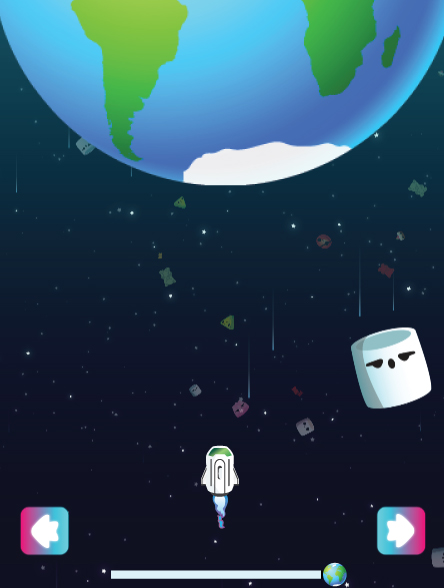
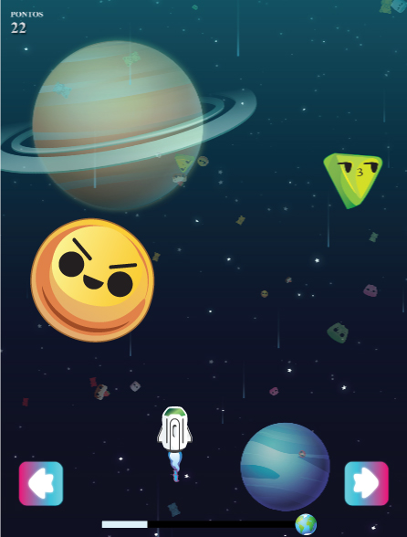

HISTÓRIA
Orion é um explorador do espaço, chegando ao nosso sistema solar avistou o planeta Saturno e se encantou com sua beleza, mas ao se aproximar, viu que havia uma chuva de asteróides tão violenta que sua enorme nave não aguentaria passar por ela. Então avistou um planeta azul logo a frente e resolveu deixar sua nave e se jogar no espaço para ir até ele, com seu corpo pequeno conseguiu atravessar e chegar no planeta, mas com o impacto da queda acabou perdendo seus braços mecânicos. Agora Orion precisa de ajuda para trazer sua nave.
Ajude Orion, traga sua nave para o planeta Terra. Mas cuidado! Existe um grupo de asteroides estranhos e coloridos tomando conta do espaço, você terá que cruzar esses asteroides ileso até chegar a Terra.

COMANDOS
Movimente sua nave no eixo horizontal através dos botões representados como setas direcionais.

OBJETIVO
O objetivo é chegar à Terra sem colidir com nenhum asteroide colorido. No canto superior esquerdo é exibida sua pontuação, cada 1 segundo equivale a 1 ponto. A barra no inferior da tela apresenta o trajeto já percorrido e quanto ainda resta para chegar à Terra.

DIFICULDADE
Os asteroides a cada 5 segundos ficarão maiores, mais frequentes e mais rápidos, quanto mais próximo da Terra você estiver maior será a dificuldade.
